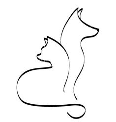
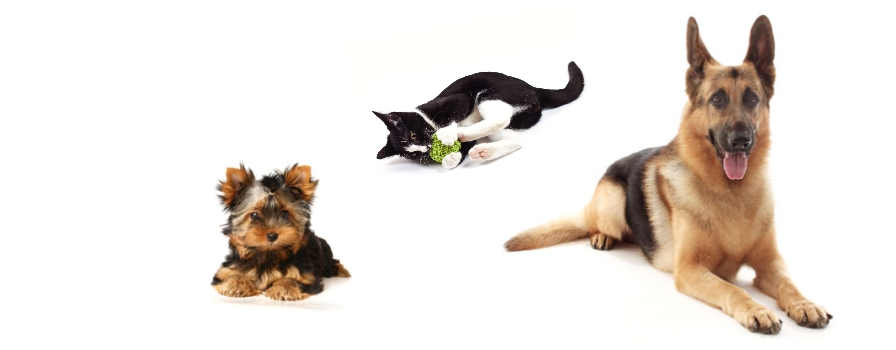

Ако с Вас си приличаме, значи вашите животни са станали важни членове на семейството Ви и Вие мислите за тях всеки път, когато пътувате по работа,
отивате на почивка или имате друг ангажимент, който не Ви позволява да им отделите нужното време и внимание.
Всеки път, когато това се случи, свържете се с „Животинки“. Няма значение, дали е куче, коте, гризач, птица или някое екзотично животно. Ние ще се погрижим вашите обичани животинки да бъдат нахранени, почистени и изморени от игри. Наша цел е по време вашите пътувания да сте спокойни и уверени, че вашите животни ще получат най-доброто отношение.
Всеки път, когато това се случи, свържете се с „Животинки“. Няма значение, дали е куче, коте, гризач, птица или някое екзотично животно. Ние ще се погрижим вашите обичани животинки да бъдат нахранени, почистени и изморени от игри. Наша цел е по време вашите пътувания да сте спокойни и уверени, че вашите животни ще получат най-доброто отношение.
